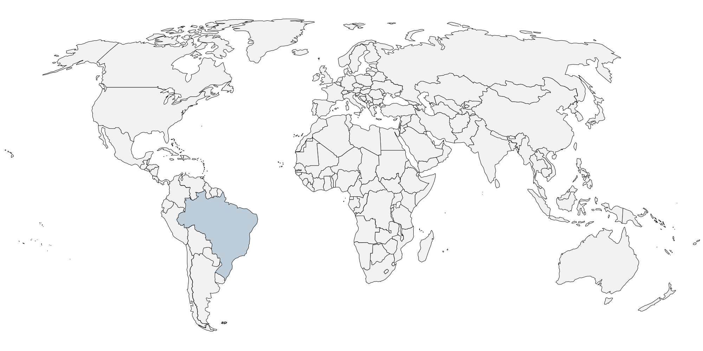

Twitter Interactive! Ooh, baby! That's the spot!

Task 1) Design a layout that is intuitive. Layout should encourage users to test multiple hashtags. Users should feel like their curiosity is rewarded. Moving throughout the interactive should be easy, not confusing, ideally.
Simply CSS and Media Queries (Leo workin on this)
\##LEO== CSS MASTER##
To-do: Decide on mobile-friendly layout.
Later: Styling rewarding results? (fly in tweets, etc.)
MAYBE: Change date input to a slider.
\##LEO== CSS MASTER##
To-do: Decide on mobile-friendly layout.
Later: Styling rewarding results? (fly in tweets, etc.)
MAYBE: Change date input to a slider.
1 Choose a hashtag
2 Choose a date
Date:
Hashtag:
I'm trending baby:
That's all you got?:
Just One more
Tweets go here, here and here
THIS IS FILLER Text, but we should probably have some down here too, maybe discussing some trends we found out about how social media changed during covid.
note from Leo:Yes, but this analysis should go at the top. Right before instructionsTask 2) Create a database (CSV) of tweets from Twitter's API that sorts tweets by these columns. ##Luca working on this
Header Row: Hashtag, date, Geo_code(we just want country?), Tweet_Content, username
Hashtag: Our basic idea is to use 5 hashtags only. But with Twitter API we can hopefully scrape more hashtags, from any time period. This means we will have two plans:
Plan 1: 5 hashtags, already scraped.
Plan 2: 10, 15 hashtags, from a broader time period. This plan depends on Luca learning how to scrape Twitter! He has a developer key though already, just needs to learn :)
Task 3) Display tweets corresponding to user inputs. ##Leo and Luca
First, select the correct tweets from the database
Next, give the tweetss to the browser in some kind of format (could be images, more likely it could be our own 'fake' tweet css).
Then, display the Tweet:
- Either on the map (if we have geocode!)
- Below the map (while we don't have geocode)